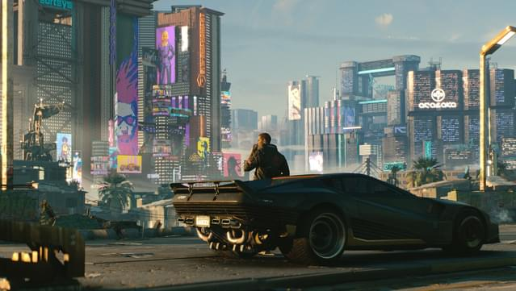
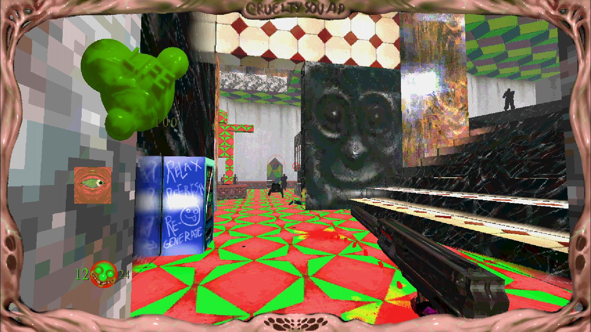
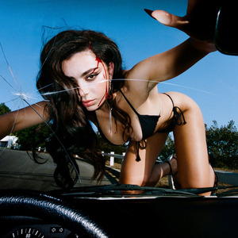
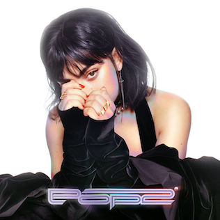
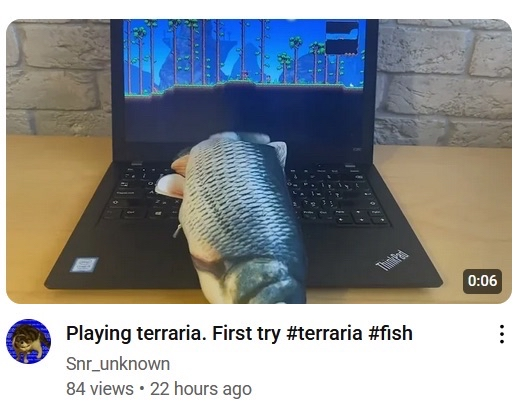

What do you think of when you think of Cyberpunk? A city filled with neon around every corner?
High tech implants that allow humans to go beyond their natural capabilities? However,
I’d argue the most important aspect of the genre is the destitute state of society.
As I tried to play through Cyberpunk 2077, I honestly found it hard at times to look past the jaw dropping
graphics and flashy effects in order to see Night City for what it really was. A miserable place where the
rich get richer and the poor get poorer.

As much as I didn’t care for the gameplay, I can say for certain that this game is gorgeous
Shortly after I set down 2077, I picked up another game. Cruelty Squad.
This game was calling my name for a long while. Everything about the world of Cruelty Squad feels. Off.
The clunky controls, the body horror implants, and the literal worship of corporations.
What is the number one way the game illustrates this? The art.

I think the image here speaks for itself
Through bright contrasting colors, fleshy textures, and nearly incomprehensible signs Cruelty Squad paints a bleak picture.
Because of how ugly the game looks, it is impossible to ignore the fact this is a world that has seen better days.
Something that was harder for me to do with Cyberpunk 2077.
Brat has the Greatest Album Cover Ever and I Won't Shut Up About it
Released on June 7th, 2024, Charli XCX’s album was a smash hit. I don’t need to tell you that.
I also don’t need to tell you, dear reader, that part of the reason for the album’s success is its cover. But I’m going to anyway
Fuzzy, default arial text on a garish green (chartreuse!) background, this album is quite ugly looking.
There are two wonderful reasons for this. The most obvious being that it leans into/references modern meme culture.
Charli XCX's most recent albums
Cover
Name
Release Date
Brat
June 7, 2024

Crash
March 18, 2022

Pop 2
December 15, 2017
A big chunk of modern meme culture can be referred to as "sh*tposts". Alongside nonsensical/absurd punchlines,
sh*tpost humor often derives from the low effort nature of the posts. S
ince Charli’s two previous albums feature professionally shot and edited photos of the popstar for their covers,
it would be natural for listeners to assume the same for her next album.
Brat subverts this expectation with a cover that was likely made in 5 minutes in MS Paint.
Checking both the absurd and low effort boxes, Brat falls easily into sh*tpost culture that is oh so popular with Gen Z folks (like me!).

An aformentioned "sh*tpost"
Furthermore, and related to low effort sh*tposting is the fact that anyone could recreate this cover.
No prior experience necessary. This, in my humble opinion, sends a clear message: Art is something anyone can do.
The most interesting aspect of Brat to me was the number of people who made their own merch/apparel/content based off of the cover.
It felt like more of a community movement than just another album release from a major artist. Something everyone could participate in.
And with that, I would like a raise a glass to Brat and the power of ugly art.